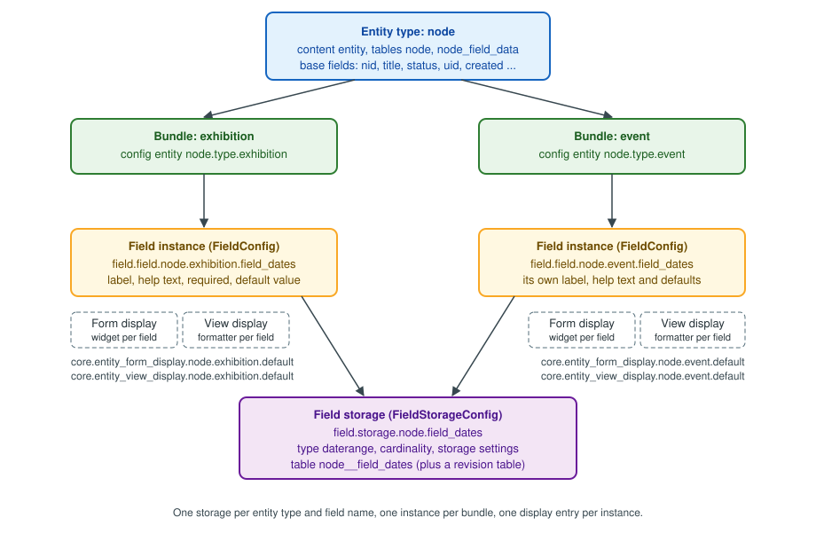

Content Types and Fields
|
This content was generated with the assistance of AI and should be verified against the official documentation before being relied on in production. |
Everything an editor sees in Drupal, from an exhibition page to a user profile, is a content entity whose data lives in fields. Content types are the most visible way to group those fields, and the Field UI (the Manage fields, Manage form display and Manage display screens) is how a site builder defines them without writing code. This page explains the model underneath the screens: entity types, bundles and fields; the difference between field storage and a field instance; every setting the Field UI offers; which database tables hold the values; and exactly which configuration files each click creates. Understanding that last part is what lets you move a content model between environments with configuration management, automate it with Drush or a recipe, and recognise the problems that appear when the model changes after content exists.
Facts on this page were checked against the Drupal User Guide, the API reference and the Drush documentation on
2026-10-30. The rest of this sub-section is written against Drupal 11.4.x, Drush 13/14 and PHP 8.3 or later. The
examples use the fictitious Meridian Museum site introduced in the sub-section index:
the exhibition and event content types built in this page are reused by the meridian_events recipe, by the
views, the JSON:API kiosk and the custom
collection_object entity covered in Custom entity types.
Entities, entity types, bundles and fields
Drupal uses four related words that older tutorials often blur together. Keeping them apart makes the rest of the page, and the Entity API, much easier to follow.
| Term | Meaning | Meridian Museum example |
|---|---|---|
Entity type |
A kind of thing that the system can store, defined by a PHP class and an annotation or attribute. Content entity types store data in the database through fields. Config entity types store exported configuration. |
|
Bundle |
A subtype of an entity type. Every entity belongs to exactly one bundle, and the bundle decides which configurable fields it has. The User Guide calls it an "entity subtype". For nodes the bundle is the content type; for terms it is the vocabulary; for media it is the media type; for custom blocks the block type. |
|
Field |
One named piece of data on an entity, made of one or more properties. A field has a type (what it stores), a widget (how it is edited) and a formatter (how it is shown). |
|
Field item |
One value of a field. A field with cardinality greater than one holds an ordered list of items, each with its own |
The three |
The User Guide introduces the idea as "Concept: Content Entities and Fields" and then builds a first content type and its fields in chapter 6 ("Setting Up Content Structure"). Its wording is deliberately friendly: it speaks of "entity subtypes" and never uses the developer word bundle. The API documentation, the machine names in configuration files and the Entity API all use "bundle", so this page uses both words for the same thing.
Not every entity type has bundles. A custom entity type can declare a single implicit bundle (the bundle equals the entity
type ID), as the collection_object entity does until a bundle config entity is added. Whether bundles are
configuration entities (a content type is a node_type config entity, a vocabulary is a taxonomy_vocabulary) is a design
choice of the entity type, not a rule.
Content entities versus configuration entities
Two families of entities exist, and the distinction determines where things are stored.
-
Content entities (
ContentEntityBasesubclasses) hold content: nodes, users, terms, media, comments, files. They live in the database, are revisionable and translatable when the entity type opts in, and are different on every environment. Their data is never exported withconfig:export. -
Configuration entities (
ConfigEntityBasesubclasses) hold site building decisions: content types, field storages, field instances, displays, views, roles, text formats. They live in theconfigtable, are exported to YAML files and are expected to be identical on every environment.
A content type is itself a config entity. The exhibition bundle you create in the UI is exported as
node.type.exhibition, and every field you add to it creates further config entities. The content created from it
(exhibition pages) is stored as node content entities. This split between the model (configuration) and the data
(content) is the reason that moving a model forward is a configuration deployment, while moving content needs
migrations or a content synchronisation tool.

The figure shows the five layers described in the rest of the page. An entity type owns base fields and has bundles. Each bundle gets field instances; every instance points to a field storage that is shared by all bundles of the same entity type that use the same field name. Each bundle also has a form display and a view display that decide the widget and the formatter of every instance.
Creating the exhibition content type
Meridian Museum editors publish exhibitions (with a run of dates, a hero image, a gallery and topics) and events (with a date range, a ticket link and a capacity). Since Drupal 11.4 the Standard installation profile no longer creates the Article and Page content types, so a new site starts with no content types at all and tutorials that begin with "open the Article content type" no longer work. Create the types yourself, as in the User Guide’s section 6.1, "Adding a Content Type".
The Add content type form
Go to Manage > Structure > Content types (/admin/structure/types) and choose Add content type. The form has these
parts.
| Setting | Effect |
|---|---|
Name and Machine name |
The label and the immutable machine name. The machine name becomes the bundle ID, the suffix of |
Description |
Shown on the Add content page to help editors choose a type. |
Submission form settings: title field label, preview before submitting, explanation or submission guidelines |
The label of the built-in |
Publishing options |
Default values for new nodes of this bundle: Published, Promoted to front page, Sticky at top of lists, and
Create new revision ( |
Display settings |
Display author and date information ( |
Menu settings |
The menus an editor may add a node of this type to from the node form (the Menu UI module). For |
Click Save and manage fields. Drupal now has a bundle with no configurable fields: every node still has the base fields
title, status, uid, created, changed, promote and sticky (plus the revision metadata fields), which is why
the Create form is not empty even before you add a field.
Repeat for event, with the description "A single dated event at the museum, such as a talk or a workshop", the title
label "Event name" and Create new revision enabled.
The exported content type
Once saved, the type exists as one configuration object. This is what drush config:export writes:
# config/sync/node.type.exhibition.yml
langcode: en
status: true
dependencies: { }
name: Exhibition
type: exhibition
description: 'A temporary or permanent exhibition with a run of dates, a hero image and topics.'
help: ''
new_revision: true
preview_mode: 1
display_submitted: falseThe keys map one to one onto the form: type is the machine name, name the label, new_revision the revision default,
preview_mode is 0 (disabled), 1 (optional) or 2 (required), and display_submitted the author line. The default
published and promoted state is not here: it is stored in a base_field_override file (see
Base fields versus configurable fields).
Deleting a content type is allowed only while no content of that type exists; the User Guide’s section 6.2, "Deleting a Content Type", describes the screen. Deleting a type also deletes its field instances and display configuration, and purges the field storages that no other bundle uses (see What happens when a field is deleted).
Adding fields in the Field UI
Open Manage fields of the content type (/admin/structure/types/manage/exhibition/fields). Field UI is the Field UI
module, enabled in the Standard profile and in Drupal CMS, and normally disabled on production sites (see
Security and pitfalls). Since Drupal 10.2 the Create a new field button opens a redesigned dialog with a grid of
field type groups (General, Text, Number, Reference, Selection, Date and time, Other) and a second step where you choose
the specific type or widget. Older tutorials and the Drupal 10 books show the previous single-page "Add field" form with a
drop-down list of types and a separate "Re-use an existing field" drop-down; the current UI still offers both, only the
layout changed, and the choices behind it are the same.
For each new field the UI asks two kinds of questions in two stages: the storage settings (field type, machine name, cardinality, and the type-specific storage options) and the instance settings (label, help text, required, default value and the type-specific options for this bundle). The next sections explain the two stages.
Field storage versus field instance
This distinction is the most important idea of the Field system, and it is the one the UI hides best.
| Field storage | Field instance (field config) | |
|---|---|---|
Config entity class |
|
|
Config name |
|
|
Scope |
One per entity type and field name; shared by every bundle that uses the field |
One per bundle; defines how the shared field behaves in that bundle |
Decides |
Field type, cardinality, whether it is translatable, storage settings such as the maximum length of a string or the target type of a reference, and indirectly the database tables and columns |
Label, help text (the |
Can change after content exists? |
Mostly no: the type, entity type and field name are immutable, and settings that change the schema are locked |
Yes; labels, help text, required and defaults are free to change |
The practical effect is that one storage can serve several bundles. If you create field_dates on exhibition and later
open Manage fields of event, you can Re-use an existing field and pick field_dates from the list: Drupal creates only
a new field instance (field.field.node.event.field_dates), not a second storage and not a second table. The two bundles
then share the table node__field_dates and the same cardinality, but each keeps its own label, help text, default value
and required flag. The sharing has two consequences you should plan for:
-
a storage setting that matters to one bundle (for example, the unlimited cardinality of
field_topics) applies to every bundle that re-uses the field; and -
views and entity queries can filter on a re-used field across bundles in one query, which is why it is worth re-using a field such as
field_dateswhen the meaning is really the same, and creating a separate field when it is not.
# Show the shared storage and both instances of the date field.
ddev drush config:get field.storage.node.field_dates
ddev drush config:get field.field.node.exhibition.field_dates
ddev drush config:get field.field.node.event.field_datesSource: Drush: config:get
The field machine name
The machine name is chosen once. The UI prefixes it with field_ (the prefix is not required by the API, but is a
convention of the UI and of every contrib module; configurable fields created by code can have any name that is not
reserved). A machine name is limited to 32 characters including the prefix, so the name part has at most 25 characters.
The name becomes the database table suffix (node__field_dates), the column prefix (field_dates_value), the name of the
PHP property ($node->field_dates), the key in Twig (content.field_dates) and the key in JSON:API attributes. Plan names
such as field_dates rather than field_exhibition_run_dates_2026: the name cannot change and a very long name makes the
generated table names exceed the database identifier limit, in which case Drupal shortens them with a hash.
Choosing the field type
A field type defines what is stored and its columns. Drupal core ships many types, grouped by the module that provides them.
| Field type (plugin ID) | Provided by | Meridian example |
|---|---|---|
Text (formatted, long) |
Text |
The exhibition |
Text (plain) |
Core |
|
Number: Integer |
Core |
|
Boolean |
Core |
|
Date |
Datetime, Datetime Range, Core |
|
Link |
Link, Core, Telephone |
|
Image |
Image, File |
Used inside media types; see Media and the Media Library |
List (text, integer, float) |
Options |
|
Reference: Content, User, Taxonomy term, Media, Other |
Core |
|
The full list, with the widgets and formatters each type offers, and the way to write your own, are in Field types and entity references and Field type, widget and formatter plugins. Modules the Standard profile no longer enables can remove types from the list: the Comment type is available only with the Comment module, Telephone only with Telephone (which Drupal 12 moves to contrib; see Preparing for Drupal 12).
Cardinality
Allowed number of values is a storage setting and is stored as cardinality: a positive integer, or -1, the value of
the constant FieldStorageDefinitionInterface::CARDINALITY_UNLIMITED, for unlimited. In the UI you choose Limited and a
number, or Unlimited. Cardinality matters in three ways.
-
It sets the widget: a single-value text field is one input; a multi-value field repeats the input, with Add another item and drag handles, or, for entity references with the autocomplete tags style and checkboxes, a single control.
-
It sets the shape of the data: a single-value field yields
$node->field_dates->value; a multi-value field is a list that you iterate withforeach ($node->field_topics as $item)and that you read as an array withgetValue(). -
It sets the storage: all values, of any cardinality, go to the same table, one row per
delta; there is no extra table for multi-value fields.
You can raise the cardinality at any time. Lowering it on a field that already holds more values than the new limit leaves
the surplus values in the table but no longer editable or validated, so reduce it only after checking the data with a query.
Changing between "limited to 1" and "unlimited" is therefore safe in one direction (more values) and risky in the other. Be careful with 1 versus
-1 in the JSON:API and Twig output as well: a single-value reference serialises as an object, a multi-value one as an
array, so changing it later also changes API consumers.
Required, default value, help text and label
These are instance settings, defined per bundle and stored in field.field.*.
| Setting | Meaning and behaviour | YAML key |
|---|---|---|
Label |
What editors see above the widget and what the default formatter prints as the field label. Can differ between bundles. |
|
Help text |
Shown below the widget. It is the field instance’s |
|
Required field |
The node form refuses to save without a value. Required applies only to the form and to validation constraints; it does not
add a database constraint, so code that saves entities with |
|
Default value |
Pre-fills new entities, using the widget in the form: a static value (for example |
|
Translatable (when Content Translation is enabled) |
Whether values are translated per language or shared across translations; see Multilingual. |
|
The exhibition instance of the date field therefore looks as follows.
# config/sync/field.field.node.exhibition.field_dates.yml
langcode: en
status: true
dependencies:
config:
- field.storage.node.field_dates
- node.type.exhibition
module:
- datetime_range
id: node.exhibition.field_dates
field_name: field_dates
entity_type: node
bundle: exhibition
label: 'Run dates'
description: 'First and last day of the exhibition. Leave the end date empty for a permanent exhibition.'
required: true
translatable: false
default_value: { }
default_value_callback: ''
settings: { }
field_type: daterangeSource: API: FieldConfig class
and the shared storage it depends on:
# config/sync/field.storage.node.field_dates.yml
langcode: en
status: true
dependencies:
module:
- datetime_range
- node
id: node.field_dates
field_name: field_dates
entity_type: node
type: daterange
settings:
datetime_type: date
module: datetime_range
locked: false
cardinality: 1
translatable: true
indexes: { }
persist_with_no_fields: false
custom_storage: falseSource: API: FieldStorageConfig class
Read the two files side by side with the Field UI. The config: dependencies of the instance name the storage and the
bundle: exporting and importing a configuration set therefore creates the bundle and storage first, and deleting the
storage removes every instance. The storage’s settings (here datetime_type: date, date without a time of day) are the
type-specific storage settings; the instance’s own settings (empty here) are type-specific instance settings. For
entity_reference the target type (target_type: taxonomy_term) is a storage setting and the allowed target bundles and
their sort order (handler: 'default:taxonomy_term', handler_settings.target_bundles) are instance settings.
The keys locked, persist_with_no_fields and custom_storage are rarely used: locked forbids deleting the field in
the UI (modules set it for fields they depend on), persist_with_no_fields keeps the storage when the last instance is
removed, and custom_storage tells Drupal that a module stores the values itself, so no table is created.
Field storage settings that become locked
Once an entity has data in a field, Drupal blocks storage changes that could lose or corrupt it. The UI then shows the storage settings as read-only with the message that "there is data for this field in the database". The type, the entity type and the machine name are always immutable. For example, the maximum length of a plain text field can be increased but not lowered, the target type of an entity reference cannot be changed, and an allowed-values list can have values added but not removed while content uses them. The safe path for a real change is usually to create a new field, migrate the data with an update hook or a migration, switch displays and queries and delete the old field. See Update API and post updates for the hook that performs the data move.
Building the full exhibition and event models
The following fields make the Meridian model concrete. The Storage column is what is shared; the Instance column is per
bundle.
| Bundle | Field (machine name) | Storage | Instance |
|---|---|---|---|
|
Run dates |
|
Required; help text about permanent exhibitions |
|
Subtitle |
|
Optional |
|
Hero media |
|
Required; allowed bundles: |
|
Topics |
|
Allowed vocabulary: |
|
Gallery |
|
Allowed vocabulary: |
|
Dates |
Shared with |
Required; own label "Event dates" |
|
Ticket link |
|
External links only, link title disabled |
|
Capacity |
|
Minimum 1, suffix " seats" |
|
Related exhibition |
|
Allowed bundle: |
The taxonomy and media side of this model are covered in Taxonomy and Media and the Media Library; here they are only reference targets.
The link field storage and instance
A link field illustrates that instance settings carry most of the editorial behaviour:
# config/sync/field.storage.node.field_ticket_url.yml
langcode: en
status: true
dependencies:
module:
- link
- node
id: node.field_ticket_url
field_name: field_ticket_url
entity_type: node
type: link
settings: { }
module: link
locked: false
cardinality: 1
translatable: true
indexes: { }
persist_with_no_fields: false
custom_storage: false# config/sync/field.field.node.event.field_ticket_url.yml
langcode: en
status: true
dependencies:
config:
- field.storage.node.field_ticket_url
- node.type.event
module:
- link
id: node.event.field_ticket_url
field_name: field_ticket_url
entity_type: node
bundle: event
label: 'Ticket link'
description: 'Link to the ticket shop. Leave empty for free events.'
required: false
translatable: false
default_value: { }
default_value_callback: ''
settings:
title: 0
link_type: 16
field_type: linkIn the link instance link_type: 16 means external links only (LinkItemInterface::LINK_EXTERNAL; 1 is internal only
and 17 is both) and title: 0 disables the link text. The UI hides these numbers behind radio buttons, but you will meet
them in the exported YAML.
Manage form display: widgets
Manage form display (/admin/structure/types/manage/exhibition/form-display) decides how each field appears on the
create and edit forms. The User Guide describes it in "6.8. Concept: Forms and Widgets" and "6.9. Changing Content Entry
Forms". For each field you can:
-
choose a widget from those the field type supports (for a
daterangefield: Date and time range, Date range with all-day option, or Date range with HTML5 inputs; forentity_reference: autocomplete, autocomplete tags style, select list, check boxes or radio buttons; fortext_long: the CKEditor 5 formatted text area, or a plain text area); -
change the widget’s own settings (the rows of a text area, the placeholder, the size of an input, the number of matches of an autocomplete, whether the autocomplete may create missing terms);
-
change the weight by dragging the field, which orders the form;
-
move a field to Disabled, which hides it from the form (and, when the field is required, makes saving impossible);
-
optionally group the fields in sub-forms, with the contrib Field Group module (not core).
The Disabled region does not delete data: it only stops the widget from being shown. A field that is both required and disabled on the default form is a typical cause of the "content cannot be saved" report for a type.
Form modes
The default form is core.entity_form_display.node.exhibition.default. Each entity type can have additional form modes
(core.entity_form_mode.node.<name>), enabled per bundle under Custom display settings at the bottom of the Manage form
display page; core defines a register form mode for users, so that the registration form can show fewer fields than the
account edit form. The User Guide notes that this is rarely used for content. A form mode is a separate
entity_form_display config entity per bundle and mode, for example core.entity_form_display.user.user.register.
The form display configuration
# config/sync/core.entity_form_display.node.exhibition.default.yml
langcode: en
status: true
dependencies:
config:
- field.field.node.exhibition.body
- field.field.node.exhibition.field_dates
- field.field.node.exhibition.field_hero
- field.field.node.exhibition.field_subtitle
- field.field.node.exhibition.field_topics
- node.type.exhibition
module:
- datetime_range
- media_library
- path
- text
id: node.exhibition.default
targetEntityType: node
bundle: exhibition
mode: default
content:
body:
type: text_textarea_with_summary
weight: 4
region: content
settings:
rows: 9
summary_rows: 3
placeholder: ''
show_summary: true
third_party_settings: { }
field_dates:
type: daterange_default
weight: 3
region: content
settings: { }
third_party_settings: { }
field_hero:
type: media_library_widget
weight: 2
region: content
settings:
media_types: { }
third_party_settings: { }
field_subtitle:
type: string_textfield
weight: 1
region: content
settings:
size: 60
placeholder: ''
third_party_settings: { }
field_topics:
type: entity_reference_autocomplete_tags
weight: 5
region: content
settings:
match_operator: CONTAINS
match_limit: 10
size: 60
placeholder: ''
third_party_settings: { }
path:
type: path
weight: 30
region: content
settings: { }
third_party_settings: { }
status:
type: boolean_checkbox
weight: 120
region: content
settings:
display_label: true
third_party_settings: { }
title:
type: string_textfield
weight: 0
region: content
settings:
size: 60
placeholder: ''
third_party_settings: { }
hidden:
promote: true
sticky: true
uid: true
created: trueNotice that base fields (title, status, path) are configured in the same file as configurable fields, and that
anything not listed under content and not under hidden is simply not part of the form. Notice also that a field that
exists but has no entry in this file does not appear on the form: this is why a field added by a recipe or an import can
seem to "disappear" until a form display entry is added.
Manage display: formatters and view modes
Manage display (/admin/structure/types/manage/exhibition/display) controls how fields are rendered when an entity is
viewed. The User Guide covers it in "6.10. Concept: View Modes and Formatters" and "6.11. Changing Content Display". A
view mode is a context in which an entity is shown (full page, teaser, search result, RSS); each has its own
core.entity_view_display.node.exhibition.<mode> configuration. For each field in a view mode you decide:
-
whether it is shown, and its weight and region (Content or Disabled);
-
the label position: Above, Inline, Hidden or Visually hidden;
-
the formatter (a date range can be shown with a Default formatter, a Plain ISO formatter or a Custom PHP date format; a media reference as a rendered entity in a view mode, as a label or as a link; text as default, trimmed or summary or trimmed);
-
the formatter’s own settings (date format, separator, trim length, link target, whether the entity reference label links to the entity).
At the bottom of the page, Custom display settings lists the view modes the bundle can use. A mode that is not enabled for
the bundle falls back to the default display: this explains why a newly created teaser mode looks like the full page until
you enable it and configure it. Display configuration, view modes, responsive images and image styles are the subject of
Display modes and image styles; the Twig side is in
Template suggestions and preprocess.
# config/sync/core.entity_view_display.node.exhibition.default.yml (excerpt)
langcode: en
status: true
dependencies:
config:
- field.field.node.exhibition.field_dates
- node.type.exhibition
module:
- datetime_range
- user
id: node.exhibition.default
targetEntityType: node
bundle: exhibition
mode: default
content:
field_dates:
type: daterange_default
label: above
settings:
timezone_override: ''
format_type: long
separator: '-'
third_party_settings: { }
weight: 1
region: content
links:
settings: { }
third_party_settings: { }
weight: 100
region: content
hidden:
langcode: trueThe form display and the view display are independent. A field can be editable and not shown, or shown and not editable. Neither one defines the data: data and validation belong to the storage and the instance. This is also why headless consumers such as JSON:API are not affected by the display configuration: they expose the fields that exist and are accessible, not the fields a theme renders.
Base fields versus configurable fields
Every field is either a base field or a configurable field. The difference is where it is defined and where it is stored.
| Base field | Configurable field | |
|---|---|---|
Defined by |
PHP code: |
A config entity pair: |
Exists on |
Every bundle of the entity type |
Only the bundles that have an instance |
Exported in configuration |
No, except for per-bundle customisations ( |
Yes |
Stored in |
The entity type’s shared tables ( |
One dedicated table per field ( |
Example |
|
|
A site builder cannot add or remove base fields in the UI. The node entity type defines them in
Drupal\node\Entity\Node::baseFieldDefinitions(), and modules add more (the Content Moderation module adds
moderation_state, Path adds path, Content Translation adds metadata fields). What you can change in the UI is a
subset of their instance-like settings. When you set the title label to "Event name", or change the default of Promoted to
front page in the Add content type form, Drupal stores a base field override, a config entity of type BaseFieldOverride
that applies only to one bundle:
# config/sync/core.base_field_override.node.event.title.yml
langcode: en
status: true
dependencies:
config:
- node.type.event
id: node.event.title
field_name: title
entity_type: node
bundle: event
label: 'Event name'
description: ''
required: true
translatable: true
default_value: { }
default_value_callback: ''
settings: { }
field_type: string# config/sync/core.base_field_override.node.event.promote.yml (excerpt)
id: node.event.promote
field_name: promote
entity_type: node
bundle: event
label: 'Promoted to front page'
required: false
default_value:
-
value: 0
field_type: booleanAn override can change the label, description, required flag and default value, but it cannot change the field type, the cardinality or the storage. Anything that needs different storage must be a configurable field or a code change.
Defining base fields in code
A custom content entity declares its own base fields, which is the usual way to store a fixed, central set of values. The
collection_object entity of Meridian Museum defines accession_number that way (the full entity is built in
Custom entity types):
<?php
declare(strict_types=1);
namespace Drupal\meridian_collection\Entity;
use Drupal\Core\Entity\ContentEntityBase;
use Drupal\Core\Entity\EntityTypeInterface;
use Drupal\Core\Field\BaseFieldDefinition;
/**
* Excerpt: the base fields of the collection object entity.
*/
abstract class CollectionObjectBase extends ContentEntityBase {
public static function baseFieldDefinitions(EntityTypeInterface $entity_type): array {
$fields = parent::baseFieldDefinitions($entity_type);
$fields['accession_number'] = BaseFieldDefinition::create('string')
->setLabel(t('Accession number'))
->setDescription(t('The museum inventory number, for example 1987.42.3.'))
->setRequired(TRUE)
->setSetting('max_length', 32)
->addConstraint('UniqueField')
->setDisplayOptions('form', ['type' => 'string_textfield', 'weight' => 0])
->setDisplayOptions('view', ['label' => 'inline', 'type' => 'string', 'weight' => 0])
->setDisplayConfigurable('form', TRUE)
->setDisplayConfigurable('view', TRUE);
$fields['on_display'] = BaseFieldDefinition::create('boolean')
->setLabel(t('On display'))
->setDefaultValue(FALSE)
->setDisplayConfigurable('form', TRUE)
->setDisplayConfigurable('view', TRUE);
return $fields;
}
}The calls setDisplayOptions() give the default widget and formatter that the entity ships with, and
setDisplayConfigurable() lets a site builder still change them in the Field UI: without it the display of a base field is
fixed in code. Cardinality is set with ->setCardinality(-1) (or the constant). Constraints such as UniqueField are added
with addConstraint(). After adding or changing a base field definition in code you must apply the schema change through
an update (hook_update_N() using EntityDefinitionUpdateManager or a post update); on the Status report a pending
change appears as "Mismatched entity and/or field definitions", an error that older books also describe with the Drush
entity:updates command, removed in Drush 9. Do not run a schema change on a live site without a database backup; see
Update API and post updates.
Adding a bundle field from code
A module can add a field to a bundle, without creating configuration, with hook_entity_bundle_field_info(). Since Drupal
11.1 hooks are implemented as attribute methods on a class in src/Hook (older Drupal 10 modules and books write a
procedural function in the .module file), as shown here for the Meridian module:
<?php
declare(strict_types=1);
namespace Drupal\meridian_collection\Hook;
use Drupal\Core\Entity\EntityTypeInterface;
use Drupal\Core\Field\BaseFieldDefinition;
use Drupal\Core\Hook\Attribute\Hook;
use Drupal\Core\StringTranslation\StringTranslationTrait;
/**
* Entity field hooks of the Meridian collection module.
*/
final class FieldHooks {
use StringTranslationTrait;
/**
* Adds a computed read-only "days remaining" field to exhibitions.
*/
#[Hook('entity_bundle_field_info')]
public function bundleFieldInfo(EntityTypeInterface $entity_type, string $bundle, array $base_field_definitions): array {
$fields = [];
if ($entity_type->id() === 'node' && $bundle === 'exhibition') {
$fields['days_remaining'] = BaseFieldDefinition::create('integer')
->setName('days_remaining')
->setLabel($this->t('Days remaining'))
->setComputed(TRUE)
->setClass('\Drupal\meridian_collection\Plugin\Field\DaysRemainingItemList')
->setReadOnly(TRUE)
->setDisplayConfigurable('view', TRUE);
}
return $fields;
}
}Fields defined this way are code-defined, appear in Manage display but are not exported as field.storage.*, and are
suited to computed values. For a stored value, create a configurable field instead: it is simpler, exportable and
translatable. Hooks and the OOP hook system are covered in Hooks and OOP hooks.
What is stored where
Drupal’s default SQL storage (SqlContentEntityStorage) puts the data of an entity type in a set of tables whose names
follow the entity type and field names. For a node with the revisions and translations of Drupal 11 these are:
| Table | Content |
|---|---|
|
One row per node: the identifiers ( |
|
One row per node and translation: the translatable and revisionable base fields ( |
|
One row per revision: |
|
One row per revision and translation of the base fields. |
|
One table per configurable field: the values of the current revision. Columns |
|
The same columns for every revision. |
|
The body field is an ordinary configurable field, with columns |
Two rules explain almost every question about the schema:
-
Base fields live in shared tables; configurable fields live in their own tables. A node’s title is a column of
node_field_data; its dates are rows ofnode__field_dates. -
The column names are the field name plus the property name. A link field
field_ticket_urlhasfield_ticket_url_uri,field_ticket_url_titleandfield_ticket_url_options; an entity referencefield_topicshasfield_topics_target_id; an image has_target_id,_alt,_title,_widthand_height.
A multi-value field has one row per value, ordered by delta; there is no serialised array. The primary key of the data
table is (entity_id, deleted, delta, langcode), with indexes on bundle and revision_id. A date stored by the datetime
types is a string in UTC (2026-11-14 for a date only, 2026-11-14T18:30:00 for date and time), not a database date type,
and a timestamp field is an integer.
# What do the Meridian exhibitions look like in the database?
ddev drush sql:query "SELECT n.nid, d.title, f.field_dates_value, f.field_dates_end_value
FROM node n
JOIN node_field_data d ON d.nid = n.nid AND d.vid = n.vid
LEFT JOIN node__field_dates f ON f.entity_id = n.nid AND f.revision_id = n.vid
WHERE n.type = 'exhibition' ORDER BY f.field_dates_value DESC LIMIT 5"Source: Drush: sql:query
This query is read-only and is a way to understand the layout, not a way to read content in a module. Application code
should use the entity API and entity queries, which respect
translations, revisions, access rules and cache invalidation; writing directly to node__* tables skips all of them and
leaves caches and search indexes stale.
Why the tables are laid out this way
A dedicated table per configurable field is what lets a site builder add a field without altering a shared table: adding
field_capacity creates node__field_capacity (and the revision table) and nothing else. It also makes multi-value
fields natural and lets Views join only the fields it needs. The cost is more joins: a node with twenty fields needs a
join per field, which is one of the reasons the page cache, the render cache and Views caching matter (see
Performance and caching) and why a content model with several hundred
fields per bundle is an anti-pattern. Entities with custom_storage: true fields, or entity types using a non-SQL storage,
behave differently, and Drupal itself can use a shared table layout for base fields only. Wide content models are better
split across several entities with references than put in one very wide node.
Translations and revisions
Both translation and revision support are properties of the entity type (the node declares both) and of each field
storage. For translatable fields, one row per language is stored; for non-translatable fields, the single value is
shared by every translation. Revisions copy field values into the *_revision tables each time a new revision is saved;
this is why the Create new revision default matters for the table size, and why moderation workflows (see
Content moderation, workflows and revisions) create many
rows.
What happens when a field is deleted
When you delete a field instance in Manage fields, Drupal marks the instance as deleted and the values stay in the table
until cron purges them, in batches, with field_purge_batch(); the deleted column of the data table is the marker. If
the field storage has no instances left, it is deleted too, and its tables are dropped only when the last value has been
purged. So a deleted field can still occupy space and appear in the Status report until cron runs. On a site with very
many values you can run drush cron repeatedly, or raise the purge batch size with the field_purge_batch_size setting
(documented in default.settings.php). Deleting a field whose configuration is still in the exported sync directory
without removing it there as well will bring it back on the next config:import, so delete in one environment and export
the change, instead of deleting in every environment.
From UI choices to configuration YAML
Putting the pieces together, the following table shows what each action in the Field UI creates or changes in the active
configuration. Run drush config:export and use git diff config/sync to see it after any change.
| UI action | Configuration affected |
|---|---|
Add content type |
Creates |
Add field (new storage) |
Creates |
Re-use an existing field |
Creates only |
Change label, help text, required, default value |
Edits |
Change cardinality or a storage setting |
Edits |
Change widget or widget settings |
Edits |
Change formatter, label position or order |
Edits |
Enable a custom view mode for the bundle |
Adds an |
Delete field |
Removes |
Dependencies are explicit in each file (dependencies.config), and config:import creates things in the right order:
bundle, storage, instance, displays. The consequences are practical.
-
Always commit the storage, the instances and the displays together. An instance imported without its storage fails with a "missing dependency" error, and one imported without a display entry will not show on the form.
-
Never edit these files by hand to change a type or a storage setting on a site with data. Use an update hook or a migration; the active configuration and the database schema can diverge.
-
Machine names are API. Renaming
field_datesin YAML does not rename the table or move the data.
Configuration management and
Configuration API and schema explain how these files are exported,
validated against their schema and imported, and why each of the config types above has a schema (field.storage.*,
field.field.*, core.entity_form_display.*), which is what catches wrong YAML before it reaches the database.
Doing the same without the UI
Drush can create the same fields, which is useful in scripts, in tests and in a project README.
# Create the exhibition date range non-interactively (Drush 13/14).
ddev drush field:create node exhibition \
--field-name=field_dates \
--field-label="Run dates" \
--field-description="First and last day of the exhibition." \
--field-type=daterange \
--field-widget=daterange_default \
--is-required=1 \
--cardinality=1
# Re-use it on the event bundle.
ddev drush field:create node event --existing-field-name=field_dates
# Export the result.
ddev drush config:export --yesSource: Drush: field:create
The field:create command (alias fc) has existed since Drush 11 and prompts for anything not given as an option; related
commands field:info, field:delete, field:clone and field:base-info help you inspect and change a model. Use
drush field:create to set up a model, but still export and commit the resulting configuration: the command changes only
the active configuration of the site it runs on.
Creating fields programmatically
An update hook or a recipe-like script creates fields with the same config entities the UI uses. Add the storage first, then the instance, then the display entries:
<?php
declare(strict_types=1);
use Drupal\Core\Entity\Entity\EntityFormDisplay;
use Drupal\Core\Entity\Entity\EntityViewDisplay;
use Drupal\field\Entity\FieldConfig;
use Drupal\field\Entity\FieldStorageConfig;
/**
* Adds the "audience" list field to events.
*/
function meridian_collection_post_update_event_audience(): void {
$field_name = 'field_audience';
if (!FieldStorageConfig::loadByName('node', $field_name)) {
FieldStorageConfig::create([
'field_name' => $field_name,
'entity_type' => 'node',
'type' => 'list_string',
'cardinality' => 1,
'settings' => [
'allowed_values' => [
'all' => 'Everyone',
'families' => 'Families',
'adults' => 'Adults',
],
],
])->save();
}
if (!FieldConfig::loadByName('node', 'event', $field_name)) {
FieldConfig::create([
'field_name' => $field_name,
'entity_type' => 'node',
'bundle' => 'event',
'label' => 'Audience',
'description' => 'Who the event is mainly for.',
'required' => TRUE,
'default_value' => [['value' => 'all']],
])->save();
}
EntityFormDisplay::load('node.event.default')
?->setComponent($field_name, ['type' => 'options_select', 'weight' => 6])
->save();
EntityViewDisplay::load('node.event.default')
?->setComponent($field_name, ['type' => 'list_default', 'label' => 'inline', 'weight' => 6])
->save();
}Guard with loadByName() so that the script can run again, and keep in mind that the configuration the script creates must
also be exported, or the next config:import will delete the field (it is not in the sync directory). In a
recipe, the same model is expressed as exported YAML files in the recipe’s config/ directory
plus a recipe.yml that lists its module dependencies; the meridian_events recipe ships exactly the event files shown on
this page, and a recipe cannot update a field that already exists with different settings, so it is meant for fresh sites.
Reading and writing field values
The entity API hides the table layout. Field items are objects with properties; the "main property" gives the common value.
<?php
declare(strict_types=1);
use Drupal\node\Entity\Node;
$exhibition = Node::create([
'type' => 'exhibition',
'title' => 'Light and Sound',
'status' => 1,
'field_subtitle' => 'An exhibition about waves',
'field_dates' => [
'value' => '2026-11-14',
'end_value' => '2027-03-28',
],
'field_topics' => [
['target_id' => 12],
['target_id' => 15],
],
]);
$exhibition->save();
// Single value: main property, or a named property.
$start = $exhibition->get('field_dates')->value;
$end = $exhibition->get('field_dates')->end_value;
// Multi value: iterate the items, or fetch the referenced entities.
foreach ($exhibition->get('field_topics') as $item) {
$term_id = $item->target_id;
}
$terms = $exhibition->get('field_topics')->referencedEntities();
// Append a value, check emptiness, validate before saving.
$exhibition->get('field_topics')->appendItem(['target_id' => 18]);
$is_empty = $exhibition->get('field_subtitle')->isEmpty();
$violations = $exhibition->validate();An entity query searches by field and bundle, and must state whether to check access.
<?php
declare(strict_types=1);
$nids = \Drupal::entityTypeManager()->getStorage('node')->getQuery()
->accessCheck(TRUE)
->condition('type', 'exhibition')
->condition('status', 1)
->condition('field_dates.end_value', date('Y-m-d'), '>=')
->sort('field_dates.value', 'ASC')
->range(0, 10)
->execute();The \Drupal:: static call is acceptable in a script, but in a service or controller inject
EntityTypeManagerInterface, as explained in Services and dependency
injection. A query without accessCheck() throws an exception in current Drupal versions; the older books that omit it
describe behaviour of Drupal 8 and 9, where it only emitted a deprecation. In Drupal 12 query objects are also no longer
serialisable, so do not store them in the cache or in a queue item.
Content types in the rest of the system
A bundle is also the unit that other subsystems attach to. The following list points to the pages where each is covered.
-
Permissions. Each content type has its own permissions (Exhibition: Create new content, Edit own content, Edit any content, Delete own content, Delete any content, View revision history…), which the Meridian Content Editor, Curator and Reviewer roles are granted differently; see Users, roles and permissions.
-
Moderation. A content moderation workflow (draft, review, published) is applied to chosen bundles; see Content moderation, workflows and revisions.
-
Paths. A Pathauto pattern (contrib) or the core URL alias field is set per bundle; see Menus and path aliases.
-
Translation. Which bundles and fields are translatable is stored in
language.content_settings.node.exhibitionand on each field; see Multilingual. -
Views and APIs. A view can filter on the bundle and show any field; JSON:API exposes
node--exhibitionas a resource type with the fields as attributes and relationships; see Views and JSON:API. -
Layout. Layout Builder can override the view display of a bundle per entity; see Layout Builder. Drupal CMS 2.x uses Canvas as the default editor and does not change the content model: fields still come from the bundle (see Drupal CMS and site templates).
Developers also meet bundles in code: $entity->bundle() returns the bundle ID; $node->getType() is the node-specific
equivalent; and EntityTypeBundleInfoInterface::getBundleInfo('node') lists all bundles of an entity type, as used by
route access and by the Add content page. See Entity API.
Security and pitfalls
Field UI belongs on development, not on production. The Field UI module lets anyone with the Administer content types
and field permissions change the structure of the site; on a site that deploys configuration it should be uninstalled
in production, and the corresponding permissions are not given to editors (they are marked "restrict access" for that
reason). A structure change made directly on production is lost at the next config:import, or worse, creates a
tables-versus-configuration mismatch.
Do not rename machine names, and do not "fix" them by hand. Renaming a field or a bundle is not supported: the tables, display files, views and API consumers all use the name. Recreate the field and migrate the data.
A required field is not a data guarantee. It is checked by the form and by validate(). Imports, migrations and code that
write with save() without calling validate() can store empty required fields. Add a validation constraint if a rule
must always hold.
Reducing cardinality or changing a storage type risks data. Add a new field and migrate the values instead.
Re-using a field shares the storage. Cardinality and storage settings apply to every bundle. Re-use only where the meaning is identical.
Hidden is not secret. Disabling a field on the form display or the view display does not restrict access to its values:
JSON:API and REST expose every field the user may access. Field-level access is controlled with permissions
(View/Edit field_x when the module adds them) or hook_entity_field_access(); see
Access control and permissions in code.
Render formatted text safely. Text fields store a format with the value; always render them with their format (the
default formatter does). Printing {{ node.field_x.value|raw }} in Twig bypasses the text format filtering and is an XSS
risk; see Text formats and CKEditor 5.
A deleted type leaves nothing behind except what you forgot. Remove the content first; references from views, menus and recipes to the deleted type must also go.
Mind the field and bundle count. Each new field is a table; each bundle is a set of display entities. Prefer fewer, re-usable fields with clear meaning over hundreds of near-duplicates.
Version notes and corrections of older material
| Topic | What changed and what older material says |
|---|---|
Standard profile content types |
Drupal 11.4 stopped creating the Article and Page types, so a new Standard install has no content types. Drupal 10 Masterclass (2023) and other material written for Drupal 10 assume the pre-installed types; create your own first, or apply a recipe or Drupal CMS. |
Add field dialog |
Drupal 10.2 introduced the redesigned field creation dialog described above. Drupal 10 Development Cookbook (2023) and Drupal 10 Masterclass show the earlier two-step form with a type drop-down; the concepts are unchanged. |
Annotations versus attributes |
Content entity types, field types, widgets and formatters are declared with PHP attributes ( |
Hooks |
|
|
Removed in Drush 9. Use update hooks or post updates for entity and field definition changes. |
Entity query access |
|
Drush |
|
Drupal 12 |
The field system, Field UI and configuration format described here are unchanged by the announced removals. Drupal 12 moves the Field Layout and Telephone modules to contrib, so a model that uses them must install the contrib versions before upgrading; see Preparing for Drupal 12. |
For the complete list of outdated advice see Where older books and tutorials are outdated.
Summary
-
A content entity belongs to one bundle of one entity type; the bundle decides its configurable fields. The content type is the bundle of nodes.
-
A configurable field has a storage (type, cardinality, columns, table), shared by every bundle that re-uses it, and one instance per bundle (label, help text, required, default value, bundle settings).
-
The form display chooses widgets and the view display chooses formatters; they are separate configuration per bundle and mode.
-
Base fields are defined in code, live in shared tables and are customised per bundle with base field overrides; configurable fields have their own tables (
node__field_*) and are exported asfield.storage.*andfield.field.*. -
Every UI choice becomes a YAML file; commit storage, instance and displays together, and change models on development, not on production.
-
Plan machine names, cardinality and field re-use before content exists: storage changes on a site with data need an update hook or a migration.